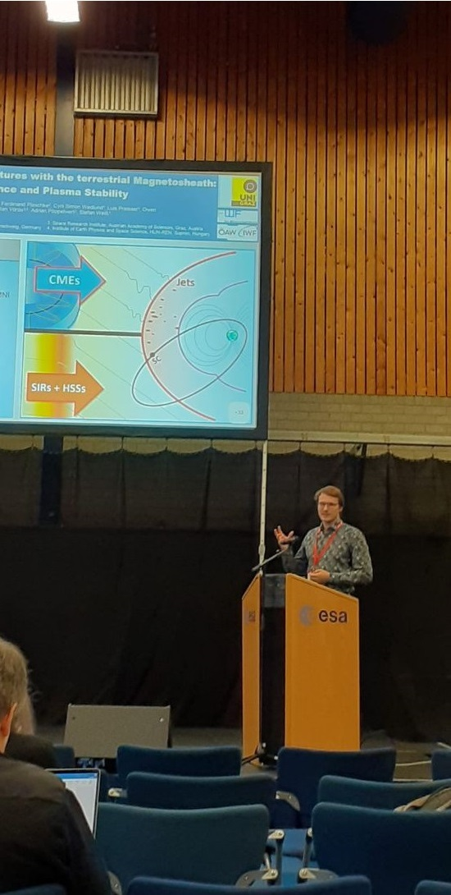

Research Interest

Talk at "Heliophysics
in Europe" Workshop
at ESA / ESTEC
Talk at "Heliophysics
in Europe" Workshop
at ESA / ESTEC
The main research focus lies on the solar wind and large-scale solar wind structures
(coronal mass ejections, stream ineraction regions, high-speed streams)
and their influence on the Earth's magnetosheath and magnetosphere.
In particular, I investigate the influence of the solar wind on dynamic pressure enhancements ("jets")
in the magnetosheath.
The broader research focus includes stellar activity and solar- terrestrial relations in general.
I am part of the Heliospheric Research Group at the University of Graz.
Visit my
university sciene webpage for additional information on my current work and publications.
Publications:
Koller, F., Raptis, S., Temmer, M., Karlsson, T., (2024).The Effect of Fast Solar Wind on Ion Distribution Downstream of Earth’s Bow Shock.
The Astrophysical Journal Letters, 964, L5, doi: 10.3847/2041-8213/ad2ddf
Koller, F., Plaschke, F., Temmer, M., Preisser, L., Roberts, O. and Vörös, Z., (2023)
Magnetosheath Jet Formation influenced by Parameters in Solar Wind Structures.
Journal of Geophysical Research: Space Physics, 128, e2023JA031339, doi: 10.1029/2023JA031339
Koller, F.,Temmer, M.,Preisser, L.,Plaschke, F.,Geyer, P.,Jian, L. K., et al. (2022)
Magnetosheath jet occurrence rate in relation to CMEs and SIRs.
Journal of Geophysical Research: Space Physics,127, e2021JA030124, doi: 10.1029/2021JA030124
Koller F., Leitzinger M., Temmer M., Odert P., Beck P. G., Veronig A. (2021)
A search for flares and associated CMEs on late-type main-sequence stars in optical SDSS spectra.
Astronomy & Astrophysics, 646 A34, doi: 10.1051/0004-6361/202039003
Krämer, E., Koller, F., Suni, J., LaMoury, A. T., Pöppelwerth, A., Glebe, G., et al. (2025).
Jets Downstream of Collisionless Shocks: Recent Discoveries and Challenges.
Space Science Reviews, 221, 4, doi: 10.1007/s11214-024-01129-3
Pöppelwerth, A., Glebe, G., Mieth, J. Z. D., Koller, F., Karlsson, T., Vörös, Z., and Plaschke, F. (2024)
Scale size estimation and flow pattern recognition around a magnetosheath jet.
Annales Geophysicae, 42, 271–284, https://doi.org/10.5194/angeo-42-271-2024
Pöppelwerth, A., Koller, F., Grimmich, N., Constantinescu, D., Glebe, G., Vörös, Z., Temmer, M., Simon Wedlund, C., Plaschke, F. (2024)
Cluster: List of plasma jets in the subsolar magnetosheath.
Frontiers in Astronomy and Space Sciences, 11, doi: 10.3389/fspas.2024.1388307
Vuorinen, L., LaMoury, A. T., Hietala, H., & Koller, F. (2023)
Magnetosheath jets over solar cycle 24: An empirical model.
Journal of Geophysical Research: Space Physics, 128, e2023JA031493. doi: 10.1029/2023JA031493
Leitzinger, M., Odert, P. Greimel, R., Vida, K., Kriskovics, L., Guenther, E. W.; Korhonen, H., Koller, F. Hanslmeier, A.,Kővári, Zs, Lammer, H. (2020)
A census of coronal mass ejections on solar-like stars.
Monthly Notices of the Royal Astronomical Society, Volume 493, Issue 3, p.4570-4589
My ORCID profile:
 https://orcid.org/0000-0002-8164-0004
https://orcid.org/0000-0002-8164-0004
Talks and poster presentations (selection):
See my Google Scholar profile for an overview of my papers and abstracts.2024:
Koller, F.; Simon Wedlund, C.; Temmer, M.; Plaschke, F.; Preisser, L.; Vörös, Z.; Roberts, O. W.; Pöppelwerth, A.; Raptis, S.; Karlsson, T.
Solar wind structures impacting the plasma stability and ion energy distribution downstream of the terrestrial bow shock.
Oral Presentation. EGU 2024, Vienna.
2023:
Koller, F.; Temmer, M.; Plaschke, F.; Simon Wedlund, C.; Preisser, L.; Roberts, O. W.; Vörös, Z.; Pöppelwerth, A.; Weiß, S.
Connecting Solar Wind Structures with the terrestrial Magnetosheath: Jet Occurrence and Plasma Stability.
Oral Presentation. Heliophysics in Europe Workshop. ESTEC; Nordwijk, The Netherlands.
Koller, F.
Investigating Plasma Stability within Solar Wind Structures & Jets in the dayside terrestrial Magnetosheath
Oral Presentation. THEMIS-ARTEMIS Post-AGU Fall Meeting 2023, online, San Francisco.
Koller, F.; Plaschke, F.; Preisser, L.; Temmer, M.; Roberts, O.W., Z. Vörös.
Modification of magnetosheath jet occurrence and properties within CMEs and SIRs.
Oral Presentation. EGU 2023, Vienna.
2022:
Koller, F.; Plaschke, F.; Preisser, L.; Temmer, M.; Roberts, O.W.
Solar wind conditions suppressing the production of magnetosheath jets during CME occurrence.
Oral Presentation. EGU 2022, Vienna.
Plaschke, F., Koller, F., Preisser, L., LaMoury, A.T., Hietala, H., Temmer, M., Roberts, O.W.
Magnetosheath jet occurrence in solar wind parameter space.
Oral presentation. EGU 2022, Vienna.
Koller, F; Plaschke, F; Preisser, L; Temmer, M; Roberts, O. W.; Weiss, S.
How properties of large-scale solar wind structures drive magnetosheath jet properties.
Oral presentation. COSPAR 2022, Athens.
Koller, F; Leitzinger, M, Temmer, M., Odert, P., Beck, P. G., Veronig, A.
Stellar CME search using large datasets: Balmer line asymmetries in optical SDSS spectra.
Oral presentation. COSPAR 2022, Athens.
Koller, F.; Plaschke, F.; Preisser, L.; Temmer, M.; Roberts, O. W.; Weiss, S.; Vörös, Z.
Investigating residual Magnetosheath Jets during Coronal Mass Ejections.
Poster presentation. European Space Weather Week 2022, Zagreb.
Koller, F.
Connecting Magnetosheath Jets to large-scale Solar Wind Structures.
Oral Presentation. THEMIS-ARTEMIS Post-AGU Fall Meeting 2022, online, Chicago.
2021:
Searching for flares and associated CMEs on cool stars using Balmer lines in SDSS spectra,
Florian Koller, Martin Leitzinger, Manuela Temmer, Petra Odert, Paul G. Beck, and Astrid Veronig,
talk at AGU Fall Meeting 2021, online
On the influence of CMEs and SIRs on the generation of magnetosheath jets,
Florian Koller, L. Preisser, M. Temmer, F. Plaschke, and O. W. Roberts,
poster at AGU Fall Meeting 2021, online
Characteristics of magnetosheath jets during an CME passage,
Luis Preisser, Ferdinand Plaschke, Florian Koller, Manuela Temmer, Owen Roberts,
poster at AGU Fall Meeting 2021, online
First results on production of magnetosheath jets during to SIRs and CMEs,
Koller Florian, Temmer Manuela, Preisser Luis, Plaschke Ferdinand,
European Solar Physics Meeting ESPM-16 2021, online
2019:
Stellar CMEs from an observational point of view,
Martin Leitzinger, Petra Odert, Krisztian Vida, Florian Koller, Astrid Veronig, Heidi Korhonen, Eike Guenther, Arnold Hanslmeier, Manuela Temmer, Karin Dissauer, Robert Greimel, Levente Kriskovics, Helmut Lammer,
EGU 2019, Vienna